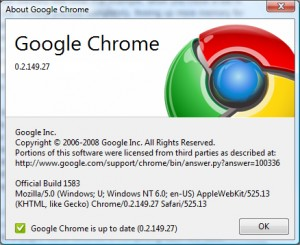

Bazı siteleri w3 kontrolünden geçirirken "The Unicode Byte-Order Mark (BOM) in UTF-8 encoded files is known to cause problems for some text editors and older browsers. You may want to consider avoiding its use until it is better supported." hatasını alıyorum. Çözmek için Crimson Editor ile açıp Document- Encoding Type ...
devamını oku11 Eylül 2008 web'den seçme haberler
- jQuery ile yapılmış güzel bir efekt. Bağlantı
- FireFox, Opera ve Webkit'den sonra Internet Explorer'da kendi özel ön ekini CSS özelliklerine eklemiş. Bağlantı
- Partilerin İnternet Stratejileri - hasanyalcin.com Bağlantı
- TechCrunch50′den ilk gün izlenimleri - webrazzi.com Bağlantı
- CSS ile Konumlandırma ilgili güzel bir ipucu uyugulama. Bağlantı
- WordPress 2.6 ...
Internet Explorer 6 olmasa hayat daha kolay ve zevkli olurdu
Web kod yazarlarını en çok zorlayan konulardan biri farklı tarayıcılara uyumlu kod yazmaktır. Birinin düzgün yorumladığını diğer farklı yorumlar ve bizim için arayış ve çile başlar, çözünce geçici bir sevinç yaşarız genelde. Farklı tarayıcılara göre kod yazmak bu iş için devamlı bir sorun olarak kalacağını düşünüyorum. Peki bu durumu nasıl ...
devamını oku09 Eylül 2008 web'den seçme haberler
- Özel form elemanları tasarlamak. Bağlantı
- Google Chrome ipuçları. Bağlantı
- Google Chrome javascript hata konsolu kodları. Bağlantı
- WordPress temasını geliştirmek ve yenilemek Bağlantı
- WordPress Kurulumu Sonrası Yapılacaklar Listesi - webdeneyimleri.donanimhaber.com Bağlantı
- WordPress sitenizde silmeniz gerek 13 kod. Bağlantı
- gameQuery ile oyun kodlamak. jQuery alt yapısını kullana gameQuery bize oyun kodlamak ...
05 Eylül 2008 web'den seçme haberler
- Google Chrome'un kızıştırdığı pazarda Firefox yeni javascript motorunun daha hızlı olduğunu idda ediyor. Bağlantı
- Google Chrome bir çok özelliğinin yanında beni en çok etkileyen javascript yorumlama hızı. test sonuçları ortada. Firefox'un uzun süredir üzerinde çalıştığı yeni javascript yorumlama sistemide bundan daha iyi bir performans veriyorumuş. Firefox 3.1 ...
Google Chrome - Birde benden dinleyin :D
 Her yeni çıkan tarayıcının ardından inceleme yapıp yazı yazıyorum genelde. Tabi Google Chrome içinde bunu yapacaktım ki baktım çok fazla kaynak var. Beni asıl hayrete düşüren Türkçe kaynaklarında çok fazla olması idi. Sonra bir birinin tekrarı içerik oluşturmamak için gördüğüm linkleri kaynaklar kısmına ekledim. Ben ise sadece CSS ve Web ...
devamını oku03 Eylül Web'den seçme haberler
- Hasan Yalçın sitesini yenilemiş. Hayırlı olsun. Bağlantı
- Bu aralar yazı tipi gömme işleri üzerine bayağı bir çalışma var. Bence çok gecikmiş bir özellik umarım tüm tarayıcılar anlaşırlarda iş tatlıya bağlanır. Bağlantı
- Internet Explorer 8.0 Beta 2 yayınlanmış. Bağlantı
- Internet Explorer 8.0 Beta 2 ile gelen güvenlik yenilikleri - daron ...
27 Ağustos - 2 Eylül web'den seçme haberler
- Javascript ile resim bilgilerini elde etmek. Bağlantı
- Web uygulamalarını hızlandırmak için çözüm yolları. Bağlantı
- FireBug 1.2 sürümü yani Firefox 3 içi olanı kararlı sürümü yayınlanmak üzereymiş. Bağlantı
- 11 WordPress uygulaması ipucu. Bağlantı
- CSS ile nasıl gölgeli menü yapılır. Bağlantı
- 10 ünlü CSS geliştiricisinden CSS teknikleri. Bağlantı
- 40 adet CSS ...
1 haftalık haberler
- WordPRess 2.6.1 sürümüne yükselttim. Otomatik güncelleme eklentisi ile. Bu sefer etiket tablosunda sorun oldu name kolonun karakter kodunu değiştirdi ve Türkçe etiket isimlerim patladı. İşin yoksa tek tek düzelt.
- SmashingMagazine'den güzel bir makale daha CSS kodlarımızı optimize etmek ve temiz kod yazmak için 7 kural. Bağlantı
- Form ...
18 Ağustos 2008 web'den seçme haberler
- Firefox 3.1 ile birlikte gelen yeni CSS3 desteklerinden biri yeni border-images tanımı. Bağlantı
- SmasingMagazine CSS ile yapılmış 10 güzel tabloyu seçmiş. Bağlantı
- CSS ile Amazon sitesi arama sonuç ekranındaki görünümü yapmak. Bağlantı
- İyi bir jQuery kullanmak için izlenmesi gerek yol. Bağlantı
- Web kod yazarları için kod örnekleri sunan güzel ...